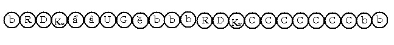
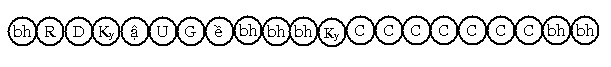
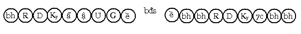
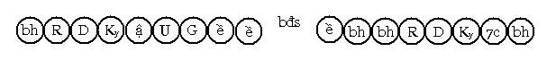

Bài 15 TÂM LỘ CHỨNG THIỀN VÀ NHẬP ĐỊNH. Tâm lộ An chỉ (appanācittavithī) gồm có 7 phần: 1) Tâm lộ chứng thiền (ādikammikajhāna vithī), có 36 lộ. 2) Tâm lộ nhập Định (jhānasamāpattivithī) để hưởng Thiền lạc, có 36 lộ. 3) Tâm lộ nhập thiền Cơ (Pādakajhànavithī) là lộ nhập thiền để chuẩn bị hiện thông, có 4 lộ. Pādakajhāna là danh từ chuyên môn để gọi Ngũ thiền (pañcakajhāna) hay Tứ thiền (thiền bốn bậc). 4) Tâm lộ Đắc Thánh Đạo (Maggavithī) có 40 lộ. 5) Tâm lộ hiện Thông (Abhiññāvithī) là tâm lộ hóa hiện thần thông, có 4 lộ. 6) Tâm lộ nhập Quả định (phalasamāpatti vīthi) là tâm lộ nhập Định để hưởng Níp-Bàn lạc, có được 40 lộ. 7) Tâm lộ nhập Thiền Diệt (Nirodhasamāpatti vīthi) là tâm lộ nhập Định để tạm thời giải thoát khỏi danh uẩn, có 4 lộ. Tổng cộng lộ tâm An chỉ thời bình nhật có 164 lộ. Cảnh trong tâm lộ An chỉ là cảnh cực rõ hoặc rõ và chót Đổng lực. Ở đây trình bày tâm lộ Chứng thiền và tâm lộ nhập Định. I. ĐỊNH NGHĨA. 1. Thế nào là Chứng thiền? Hành giả sau một thời gian tu tập Chỉ tịnh với một trong 30 đề mục chứng đạt định An chỉ (appanāsamādhi) áp chế được 5 triền cái, tâm an trú vào Thiền cảnh thành một điểm (ekaggaṃ), gọi là Chứng thiền. 2. Thế nào là nhập Định? Tuy chứng đắc được thiền Định, nhưng hành giả không có khả năng an trú lâu trong Thiền cảnh. Hành giả lại tiếp tục tinh cần, thời gian sau tâm hành giả thuần phục an trú trong Thiền cảnh (jhānārammaṇa) bao lâu tùy theo ý, khi ấy gọi là nhập Định . Theo Kinh tạng, thiền Sắc giới có bốn bậc, theo Luận tạng các ngài chia tầng Nhị thiền của Kinh tạng thành hai bậc: Khi mất chi Tầm gọi là Nhị thiền, khi mất cả chi Tứ thì gọi là Tam thiền. Sở dĩ gọi thiền năm bậc là chia theo thời sát-na (khaṇakāla). Thật ra khi chi Tầm diệt đi, tiếp theo (vài trăm hay vài ngàn lộ tâm sau) chi Tứ cũng diệt, khoảng thời gian chênh lệch này diễn ra rất nhanh gần như không có, nên Kinh văn ghi: "Vị Tỷ kheo ly Tầm - Tứ, chứng và trú Nhị thiền, một trạng thái hỷ lạc do Định sanh". Từ đây trở về sau xin dùng thiền năm bậc để tiện trình bày tâm lộ. II. TÂM LỘ ĐẮC ĐỊNH. Hành giả tu tập Chỉ tịnh, khi gần đắc định, một Quang tướng chế định (paññattipaṭibhāga nimitta) nào đó của Án xứ mà Hành giả chọn để tu tập, sẽ phát triển rực rỡ đưa tâm hành giả thể nhập vào Định vức. Diễn tiến như sau: 1- Lộ tâm người độn căn khi đắc Định.  2- Lộ tâm người lợi căn khi đắc Định.  Ký hiệu: Ẩ: sát-na Chuẩn bị (parikamma) Lộ tâm đắc Định có được: - Sát-na: 6 sát-na tâm khách (người độn căn) hay 5 sát-na tâm khách
(người lợi căn) III. TÂM LỘ NHẬP ĐỊNH Sau khi đắc Định, hành giả tinh cần tu tập, thời gian sau sẽ an trú vào thiền cảnh bao lâu tùy ý, tâm lộ diễn ra trong thời điểm này gọi là lộ nhập Định. Diễn tiến như sau: 1- Lộ tâm người độn căn.  2- Lộ tâm người lợi căn.  Lộ tâm nhập định cũng giống như lộ tâm đắc định, chỉ khác là sát-na tâm thiền bất định số, vì tâm thiền (jhānacitta) sanh khởi nhiều hay ít là do thời gian hành giả an trú trong Định vức lâu hay mau. Lộ này có được: 2 chặng: khai môn, đổng lực. - Khởi sanh cho 5 hạng người: phàm Tam nhân + 4 Thánh quả. IV. THÍCH GIẢI. 1- Sự đắc định. Hành giả tu tập Chỉ tịnh, khi phát sanh Paṭibhāganimitta (Quang tướng), muốn chứng đắc định, cần phải quân bình năm quyền: tín, tấn, niệm, định và tuệ quyền. Trước tiên là quân bình tín quyền với tuệ quyền, tấn quyền với định quyền. Tiếp đến quân bình tín, định và tuệ quyền. Vì hành giả tu tiến (bhāvanā) định An chỉ cần có Tín quyền mạnh làm nền sanh khởi Định, Định được vững vàng tăng trưởng là do Trí hổ trợ. Niệm vẫn là chủ yếu trong mọi trường hợp, Niệm giúp tâm không rơi vào phóng dật, Niệm giống như vị Tướng quốc của Đức vua trông nom mọi việc cần yếu. Khi năm quyền đã quân bình, Hành giả hướng tâm đến sự ly dục, ly bất thiện pháp. Như Kinh Văn đã ghi: "Vị Tỷ kheo ly dục, ly bất thiện pháp, chứng và trú Sơ thiền, một trạng thái hỷ lạc do ly dục sanh". Dục ở đây ám chỉ cho Dục tham (kāmacchanda), tức là những khoái lạc của giác quan. Bất thiện pháp ở đây ám chỉ năm chướng ngại (nīvaraṇa) của thiền là: hôn trầm, hoài nghi, sân, phóng dật và tham dục. Sơ thiền sanh khởi khi hội đủ năm chi: tầm, tứ, hỷ, lạc và định. Năm chi này phát triển vững mạnh, trở thành năm chi thiền. Hành giả an trú vào Thiền cảnh lần đầu, gọi là đắc thiền hay đắc định. Diễn tiến như sau: Hữu phần Rúng động, hữu phần Dứt dòng, Hướng ý môn, bốn sát-na Đại thiện hợp trí (cùng một loại tâm) lần lượt xuất hiện với các tên gọi theo thuật ngữ như sau: Parikamma (Chuẩn bị), Upacāra (Cận hành), Anuloma (Thuận thứ) và Gotrabhū (Chuyển tánh) tiếp theo là tâm Thiền khởi hiện để thể nhập nhất điểm với cảnh Quang tướng chế định. Sát-na tâm thiền này có tên là đổng lực An chỉ (appanāsamādhijavana), sau đó hữu phần cơ bản lại tái hiện. Kế tục giai đoạn hữu phần sẽ là một tâm lộ ý môn có đổng lực là đại thiện có trí khởi lên để làm phận sự xem xét lại chi thiền, ta gọi tâm lộ này là lộ Phản khán (paccavekkhanavīthi), tâm lộ này tái hiện nhiều lần một cách thích ứng rồi diệt đi. Thế nào là người độn căn? Người có trí tuệ yếu gọi là người độn căn. Thế nào là người lợi căn? Người có trí tuệ mạnh là người lợi căn. Nguyên nhân lợi căn hay độn căn là do: - Tục sinh: Thông thường người tục sinh bằng tâm đại quả có trí vô trợ, sẽ có trí nhanh nhẹn hơn người tục sinh bằng tâm đại quả có trí hữu trợ. - Sự tu tiến có thuần thục hay không? Tức là hành giả tu tiến thuần thục, tâm lộ không cần phải có sát-na Chuẩn bị. Trong hai yếu tố ấy, yếu tố tu tập là chủ yếu để thành tựu tuệ mạnh hay yếu. Người lợi căn thì tâm lộ không có sát-na Chuẩn bị (parikamma). Nếu là vị Thánh A La Hán, bốn sát-na Chuẩn bị, Cận hành, Thuận thứ và Chuyển tánh là tâm đại Hạnh có trí, tâm thiền là tâm thiền Hạnh (kriyājhānajavanacitta) và đổng lực phản khán chi thiền cũng là đại Hạnh có trí. Từ Sơ thiền đến Tứ thiền (thiền năm bậc) thì các đổng lực là thọ hỷ. Từ Ngũ thiền sắc giới đến thiền Vô sắc giới thì đổng lực là thọ xả. Vì sao người Nhị nhân không chứng đắc thiền? Vì thiếu căn bản trí trong cơ tánh, trong thiền Chỉ tịnh thì Trí hổ trợ cho Định tăng trưởng và hiển lộ sức mạnh. Đây là loại trí "tự có" không phải là trí "vay mượn", người Nhị nhân không có loại trí "tự có", nên Định không đủ sức mạnh áp chế Dục dục cái (kāmacchanda nīvaraṇa), một chướng ngại lớn nhất ngăn cản tâm không cho tâm thể nhập vào Thiền cảnh. Định có sức mạnh áp chế được dục dục cái, phải do trí "tự có" hổ trợ. Vì sao trong tâm lộ thông thường có đến bảy sát-na đổng lực, trong tâm lộ đắc thiền chỉ có năm sát-na đổng lực? Theo thông lệ những lộ ý môn thông thường, có 7 sát-na đổng lực, có 3 trường hợp có 5 sát-na đổng lực là: Người bị hôn mê bât tỉnh và người sắp lâm chung, khi ấy triều tâm yếu ớt, nên chỉ có 5 sát-na đổng lực. Đức Thế Tôn khi thể hiện Song thông lực, vì quá gấp rút, nên cũng chỉ có 5 sát-na đổng lực. Trong lộ tâm đắc định cũng có 5 sát-na đổng lực, việc này chẳng liên quan gì đến 3 trường hợp trên. Sở dĩ tâm lộ đắc định có 5 sát-na đổng lực là vì: Dục giới vức và Thiền vức là 2 lãnh vực cách biệt, lần đầu Hành giả nhờ sức mạnh của Chuyển tánh (gottrabhū) nâng tâm thể nhập vào thiền cảnh, nhưng không thể trú lâu được, khi tâm thiền diệt đi, tâm rơi vào hữu phần ngay. Có ví dụ như sau: Một người có sức mạnh, nhảy vọt lên bám vào cành cây cao, nhưng lần đầu chưa thuần thục, khi vừa chạm vào cành cây thì lại rơi xuống đất ngay. Cũng vậy, tâm hành giả lần đầu thể nhập thiền cảnh, nhưng vì chưa thuần thục do đó khi tâm thiền diệt đi, tâm rơi vào hữu phần cơ bản. Nhưng tại sao không rơi trở về tâm đổng lực Dục giới? Là do phận sự của Chuyển tánh, Chuyển tánh cắt đứt dục giới chủng để thể nhập vào thiền chủng. Khi tâm không bám được thiền cảnh thì rơi vào hữu phần cơ bản chứ không thể trở lại đổng lực dục giới. Các Ngài Giáo thọ Luận sư có cho ví dụ: "Sát-na Chuyển tánh ví như người nhảy từ bờ vực này sang bờ vực kia, khi sang bên kia bờ, không trú vững thì rơi xuống vực chứ không thể trở lại bờ bên này". Lộ tâm đắc thiền có tên gọi là Ādikammikajhānavīthi. Chữ Ādi nghĩa là khởi lên đầu tiên, tức là tâm lộ nhập thiền cảnh lần đầu. Nên ghi nhận rằng: Mỗi tầng thiền đều có thiền cảnh riêng, tuy cùng có tên gọi là Quang tướng nhưng mỗi Thiền cảnh đều có sự sai biệt nhau, như Quang tướng của cận định không sánh bằng Quang tướng của Sơ thiền, vì còn chướng ngại là Dục dục cái, Quang tướng của Sơ thiền không bằng Quang tướng Nhị thiền, vì còn chướng ngại là Tầm ... Quang tướng của Tứ thiền không tinh anh bằng Quang tướng Ngũ thiền vì còn chướng ngại là Lạc ... Tóm lại, tâm nhập thiền cảnh của tầng thiền nào đó lần đầu, tâm lộ ấy có tên gọi là Ādikammikajhānavīthi. 2- Sự nhập định. Sau khi đắc định, hành giả cần quán sát kỹ phương thức mang lại sự đắc định. Như người thợ bắn tên, khi đã bắn được mũi tên trúng mục tiêu lần đầu, người bắn tên sẽ quán sát kỹ lưỡng: Vị trí đặt chân như thế này, vị trí cây cung như vầy, dây cung căng với mức độ này, mũi tên đặt trên dây cung ở vị trí như vầy ... Cũng vậy, hành giả sau khi đắc định cần quán sát kỹ những yếu tố sau: Trú xứ đang ngụ như thế nào? Sự quán sát kỹ giúp hành giả khi mất Định tướng sẽ tìm lại được dễ dàng và đắc định trở lại. Sau khi thành công trong sự đắc định thuần thục, hành giả muốn an trú trong định lâu dài, phải tu tiến thuần thục 5 pháp vāsī (trú ngụ) đó là: Làm chủ sự tác ý. * Làm chủ tác ý. Là khi hành giả tác ý đến chi thiền nào, chi thiền ấy sanh khởi lên theo ý muốn lâu hay mau tùy ý. * Làm chủ sự đắc định. Là hành giả muốn đắc định trong bất cứ hành oai nghi nào, hay bất luận thời điểm nào cũng đều được, không còn bị lệ thuộc vào trú xứ, thời tiết hay vật thực. * Làm chủ sự nhập định. Là hành giả muốn nhập định trong oai nghi nào, bất cứ thời điểm nào, bất cứ nơi đâu đều được như ý. Như Ngài Subhūti an trú trong định tâm từ khi đi khất thực, bà Uppalavaṇṇā nhập định trong oai nghi đứng khi bị thanh niên Nanda làm hại... * Làm chủ sự trú định. Hành giả an trú trong thiền cảnh bất cứ lúc nào, sự an trú lâu mau không bị xáo trộn, như muốn an trú 5 phút sẽ kéo dài 5 phút, không là 4 hay 6 phút ... * Làm chủ phản khán chi thiền. Hành giả muốn xem xét chi thiền nào, chi thiền ấy hiện bày rõ ràng cho vị ấy, lâu mau tùy theo ý. Hành giả cần phân biệt rõ các trạng thái của chi thiền để không bị nhầm lẩn. Vì người vừa đắc thiền, các chi thiền còn yếu và sống sít quyện vào nhau rất khó quan sát rõ ràng. Thiền giả (jhānalābhī) muốn nhập định, chú nguyện rằng: "Mong rằng tâm...(sơ thiền ... ngũ thiền) mà tôi đã đắc, hãy khởi lên trong thời gian ... (tùy theo ý hành giả)". Rồi tập trung tâm lực vào Quang tướng mà mình đã đắc định, niệm đề mục của Quang tướng ấy như pathavī ... pathavī... Trước khi tâm thiền sanh khởi, tâm lộ diễn tiến như sau: Rúng động, Dứt dòng, Hướng ý môn, bốn hay ba đổng lực dục giới có trí (tùy theo người) sanh lên với tư cách là Chuẩn bị (Ẩ) (parikamma), Cận hành (Ậ) (upacāra), Thuận thứ (U) (anuloma) và Chuyển tánh (G) (gotrabhū). Người lợi căn không có sát-na Chuẩn bị, khi sát-na Chuyển tánh diệt, tâm Thiền sanh lên bất định số lượng trong khoảng thời gian hành giả chú nguyện. Điều cần lưu ý là: Định nhập lâu hay mau là do sự thanh lọc chướng ngại, nếu chướng ngại chưa thanh lọc hoàn toàn, định nhập sẽ không kéo dài. Năm triền cái là chướng ngại của sơ thiền, Tầm là chướng ngại của Nhị thiền, Tứ là chướng ngại của Tam thiền, Hỷ là chướng ngại của Tứ thiền và Lạc là chướng ngại của Ngũ thiền. Ví như con ong đi vào tổ, nếu tổ không sạch thì nó sẽ không ở lâu, hay ví như Đức Vua đi vào vườn Thượng Uyển, nếu vườn hoa dơ bẩn Đức Vua sẽ quay ra nhanh chóng. Cũngvậy, hành giả khi chưa làm chủ được Định trú, là do các pháp chướng ngại chưa được thanh lọc hoàn toàn. 3- Đổng lực trong lộ phản khán chi thiền (paccavekkhana jhānavīthi) Tuy chủ yếu là đổng lực Dục giới có trí, nhưng khi hành giả đã thuần thục sự phản khán, thì đống lực dục giới ly trí cũng có thể sanh khởi để xem xét chi thiền. V- SỐ LƯỢNG TÂM LỘ. Có 72 lộ tâm thiền (jhānacittavīthi) như sau: - Lộ đắc thiền có 36 lộ là: 9 tầng thiền Thiện với 9 tầng thiền Hạnh thành ra 18 lộ, nhân với 2 hạng người (độn và lợi căn) thành 36 lộ. - Lộ nhập Định cũng tương tự, thành ra lộ thiền tâm (jhānavīthi) có 72 lộ. Ghi chú: Tâm thiền của vị Thánh A La Hán gọi là thiền Hạnh hay thiền Tố. Tâm lộ phản khán chi thiền có đến 1536 lộ, cách tính như sau: Trước tiên nói về tầng Sơ thiền. Lấy tâm Sơ thiền thiện và tâm Sơ thiền Tố nhân với 2 hạng người, nhân với 2 lộ (đắc thiền và nhập định) thành 8 (số cơ bản), nhân với 5 chi thiền (tầm, tứ, hỷ, lạc và định) dùng để phản khán thành 40 lộ. Trong 40 lộ ấy có 20 lộ thiền Thiện và 20 lộ thiền Hạnh (của vị A La Hán). Nếu thiền thiện thì phản khán bằng đổng lực đại thiện, nếu là thiền Hạnh thì phản khán bằng đổng lực đại Hạnh . Như vậy đem 40 lộ nhân với 8 đổng lực phản khán thành ra 320 lộ. - Tầng nhị thiền (dutiyajhāna): Ta lấy số 8 cơ bản nhân với 4 chi thiền làm cảnh để phản khán (tứ, hỷ, lạc và định), thành ra 32 lộ, mỗi lộ có 8 đổng lực phản khán, thành ra 256 lộ. - Tầng Tam thiền (tatiyajhāna): Dùng số 8 cơ bản nhân với 3 chi thiền (hỷ, lạc và định), nhân với 8 đổng lực phản khán thành ra 192 lộ phản khán (8 x 3 x 8). - Tầng Tứ thiền (catutthajhāna): Đem số 8 cơ bản nhân cho 2 chi thiền (lạc và định) thành 16 lộ, nhân với 8 đổng lực phản khán thành ra 128 lộ phản khán. - Tầng Ngũ thiền (pañcamajhāna): Có tất cả là 5 tầng Ngũ thiền (Ngũ thiền Sắc giới và 4 tầng thiền Vô sắc). Lấy số 8 cơ bản nhân với 2 chi thiền (Xả và Định), nhân với 8 đổng lực phản khán thành 128 lộ phản khán, nhân 5 tầng Ngũ thiền thành ra 640 lộ (8 x 2 x 8 x 5). Tổng cộng có 1536 lộ phản khán chi thiền. -ooOoo- Ðầu trang | Mục lục | 01 | 02 | 03 | 04 | 05 | 06 | 07 | 08 | 09 | 10 | 11 | 12 | 13 | 14 | 15 | 16 | 17 | 18 | 19 | 20 | 21 | 22 | 23 | 24 | 25 |